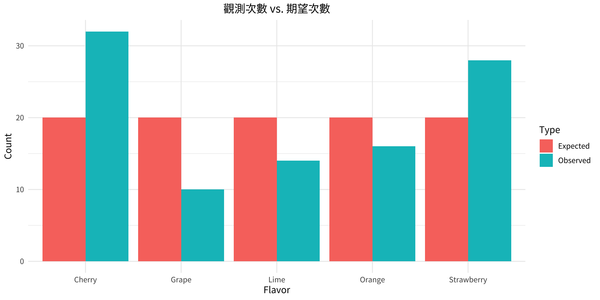

chi-square = 18 Critical value = 9.488 P-value = 0.001234 Decision: Reject H0 第11章：其他卡方檢定
實踐大學
2026-08-02
卡方分配除了用於單一變異數檢定外，還有幾個重要應用：
三種檢定皆使用相同的卡方統計量，且永遠是右尾檢定。
說明
卡方適合度檢定比較觀測次數與期望次數，以判斷某分配是否符合特定樣式。
\chi^2 = \sum \frac{(O - E)^2}{E}
假設： 1. 資料來自隨機樣本 2. 每個類別的期望次數 \geq 5
此檢定永遠是右尾（\chi^2 小 → 適合度佳；\chi^2 大 → 適合度差）。
水果汽水口味偏好
一位市場分析師調查100人對五種新口味水果汽水的偏好。若消費者沒有特別偏好，每種口味應同樣受歡迎。結果如下：
| 口味 | 櫻桃 | 草莓 | 柳橙 | 萊姆 | 葡萄 |
|---|---|---|---|---|---|
| 觀測次數 | 32 | 28 | 16 | 14 | 10 |
| 期望次數 | 20 | 20 | 20 | 20 | 20 |
在 \alpha = 0.05 下，是否有足夠的證據拒絕「消費者沒有偏好」的主張？
解題
數學解法
步驟一： H_0：消費者沒有偏好（主張） H_1：消費者有偏好
步驟二： 自由度 = 5 − 1 = 4；CV = 9.488
步驟三： \chi^2 = \frac{(32-20)^2}{20} + \frac{(28-20)^2}{20} + \frac{(16-20)^2}{20} + \frac{(14-20)^2}{20} + \frac{(10-20)^2}{20} = \frac{144}{20} + \frac{64}{20} + \frac{16}{20} + \frac{36}{20} + \frac{100}{20} = 7.2 + 3.2 + 0.8 + 1.8 + 5.0 = \boxed{18.0}
步驟四： 18.0 > 9.488 → 拒絕 H_0
步驟五： 有足夠的證據得出消費者對某些口味有偏好的結論。
解題
R 程式
chi-square = 18 Critical value = 9.488 P-value = 0.001234 Decision: Reject H0 # 視覺化
df_plot <- data.frame(
Flavor = c("Cherry","Strawberry","Orange","Lime","Grape"),
Observed = observed, Expected = expected)
df_long <- pivot_longer(df_plot, -Flavor, names_to = "Type", values_to = "Count")
ggplot(df_long, aes(x = Flavor, y = Count, fill = Type)) +
geom_bar(stat = "identity", position = "dodge") +
labs(title = "觀測次數 vs. 期望次數")
退休高管重返職場
一項調查發現，退休高管重返職場後的分布如下：38% 受雇於其他機構、32% 自行創業、23% 自由接案或顧問工作、7% 自己成立公司。一位地方研究者調查了300位高管，發現：122人為其他公司工作、85人自行創業、76人自由接案或顧問、17人自己成立公司。在 \alpha = 0.10 下，檢定這些比例是否與全國調查相同。
解題
數學解法
步驟一： H_0：分布為 38%/32%/23%/7%（主張） H_1：分布不同
步驟二： 自由度 = 4 − 1 = 3；CV = 6.251
步驟三： 期望次數：0.38 \times 300 = 114；0.32 \times 300 = 96；0.23 \times 300 = 69；0.07 \times 300 = 21
\chi^2 = \frac{(122-114)^2}{114} + \frac{(85-96)^2}{96} + \frac{(76-69)^2}{69} + \frac{(17-21)^2}{21} = 0.561 + 1.260 + 0.710 + 0.762 = \boxed{3.293}
步驟四： 3.293 < 6.251 → 不拒絕 H_0
步驟五： 沒有足夠的證據得出當地分布與全國調查不同的結論。
解題
R 程式
Expected: 114 96 69 21 chi-square = 3.2939 Critical value = 6.251 P-value = 0.3485 Decision: Do not reject H0 槍枝死亡事件
一位研究者讀到，1至18歲與槍枝相關的死亡事件分布為：74% 意外、16% 他殺、10% 自殺。在她所在的地區，過去一年有68件意外死亡、27件他殺、5件自殺（共100件）。在 \alpha = 0.10 下，檢定此主張。
解題
數學解法
步驟一： H_0：死亡事件為74%意外、16%他殺、10%自殺（主張） H_1：分布不同
步驟二： 自由度 = 3 − 1 = 2；CV = 4.605
步驟三： 期望次數：74、16、10
\chi^2 = \frac{(68-74)^2}{74} + \frac{(27-16)^2}{16} + \frac{(5-10)^2}{10} = 0.486 + 7.5625 + 2.5 = \boxed{10.549}
步驟四： 10.549 > 4.605 → 拒絕 H_0
步驟五： 有足夠的證據拒絕該地區分布與全國樣式相符的主張。
解題
R 程式
chi-square = 10.549 Critical value = 4.605 P-value = 0.0051 Decision: Reject H0 常態性檢定（選讀）
使用卡方適合度檢定，判斷下列次數分配是否服從常態分配。使用 \alpha = 0.05。
| 組距 | 次數 |
|---|---|
| 89.5–104.5 | 24 |
| 104.5–119.5 | 62 |
| 119.5–134.5 | 72 |
| 134.5–149.5 | 26 |
| 149.5–164.5 | 12 |
| 164.5–179.5 | 4 |
| 合計 | 200 |
解題
解題
步驟一： H_0：變數服從常態分配。 H_1：變數不服從常態分配。
步驟二： 由分組資料（組中點 97、112、…、172）求得 \bar{X} = 123.4、s = 17.03。將每個組界轉換為 z 值，查出每組對應的常態曲線面積，再乘以 n = 200 得到期望次數：
| 組別 | 面積 | 期望次數 E | 觀測次數 O |
|---|---|---|---|
| 104.5 以下 | 0.1335 | 26.7 | 24 |
| 104.5–119.5 | 0.2755 | 55.1 | 62 |
| 119.5–134.5 | 0.3332 | 66.64 | 72 |
| 134.5–149.5 | 0.1948 | 38.96 | 26 |
| 149.5–164.5 | 0.0550 | 11.0 | 12 |
| 164.5 以上 | 0.0080 | 1.6 | 4 |
由於最後一組的期望次數小於 5，將最後兩組合併：E = 12.6，O = 16。
解題（續）
步驟三： \chi^2 = \frac{(24-26.7)^2}{26.7} + \frac{(62-55.1)^2}{55.1} + \frac{(72-66.64)^2}{66.64} + \frac{(26-38.96)^2}{38.96} + \frac{(16-12.6)^2}{12.6} \approx \boxed{6.797}
步驟四： 自由度 = 5 − 1 − 2 = 2（每估計一個母數就再損失一個自由度：平均數與標準差）。CV = 5.991。由於 6.797 > 5.991 → 拒絕 H_0。
步驟五： 此分配可視為不服從常態分配。（註：若 \alpha = 0.01，CV = 9.210，則不會拒絕 H_0。）
解題
R 程式
f <- c(24, 62, 72, 26, 12, 4)
mid <- c(97, 112, 127, 142, 157, 172)
n <- sum(f)
xbar <- sum(f * mid) / n
s <- sqrt((n * sum(f * mid^2) - sum(f * mid)^2) / (n * (n - 1)))
bounds <- c(89.5, 104.5, 119.5, 134.5, 149.5, 164.5, 179.5)
p <- pnorm((bounds - xbar) / s)
areas <- c(p[2], diff(p)[2:5], 1 - p[6]) # 兩端為開放尾端
E <- areas * n
O <- c(24, 62, 72, 26, 12 + 4) # 合併最後兩組（E < 5）
E <- c(E[1:4], E[5] + E[6])
chi2 <- sum((O - E)^2 / E)
cat("平均數 =", round(xbar, 1), " s =", round(s, 2), "\n")平均數 = 123.4 s = 17.03 卡方值 = 6.788 臨界值 = 5.991 R 求得 \chi^2 \approx 6.788（使用未四捨五入的面積）；手算值 6.797 的差異僅來自查表面積的四捨五入。
說明
列聯表（R \times C 表）將來自兩個類別變數的資料進行交叉分類。
兩種卡方檢定使用列聯表：
兩者使用相同公式：
E = \frac{\text{（列總和）} \times \text{（欄總和）}}{\text{總計}}, \quad \chi^2 = \sum \frac{(O-E)^2}{E}
d.f. = (R-1)(C-1)
假設： 所有期望格次數 \geq 5。
當檢定兩個變數是否獨立時：
拒絕 H_0 表示變數有關聯 — 但並不指明關係的方向。
此檢定永遠是右尾。
醫院與感染
研究者檢驗醫院感染類型是否與發生的醫院有關。3家醫院共582件感染事件的資料：
| 醫院 | 手術部位 | 肺炎 | 血流 | 合計 |
|---|---|---|---|---|
| A | 41 | 27 | 51 | 119 |
| B | 36 | 3 | 40 | 79 |
| C | 169 | 106 | 109 | 384 |
| 合計 | 246 | 136 | 200 | 582 |
在 \alpha = 0.05 下，檢定感染類型是否取決於醫院的主張。
解題
數學解法
步驟一： H_0：感染類型與醫院無關 H_1：感染類型取決於醫院（主張）
步驟二： 自由度 = (3−1)(3−1) = 4；CV = 9.488
步驟三： 期望值（E = 列\times欄/總計）： E_{A,\text{手術}} = \frac{119 \times 246}{582} = 50.30, \quad E_{B,\text{肺炎}} = \frac{79 \times 136}{582} = 18.46, \quad \ldots
\chi^2 = \frac{(41-50.30)^2}{50.30} + \frac{(27-27.81)^2}{27.81} + \frac{(51-40.89)^2}{40.89} + \cdots \approx \boxed{30.698}
步驟四： 30.698 > 9.488 → 拒絕 H_0
步驟五： 有足夠的證據得出感染類型與發生的醫院有關的結論。
解題
R 程式
chi-square = 30.6962 d.f. = 4 P-value = 4e-06 Decision: Reject H0
Expected frequencies: Surgical Pneumonia Bloodstream
A 50.30 27.81 40.89
B 33.39 18.46 27.15
C 162.31 89.73 131.96飲酒量與性別
研究者檢驗飲酒量是否與性別有關。68人的樣本結果如下：
| 性別 | 低 | 中 | 高 | 合計 |
|---|---|---|---|---|
| 男 | 10 | 9 | 8 | 27 |
| 女 | 13 | 16 | 12 | 41 |
| 合計 | 23 | 25 | 20 | 68 |
在 \alpha = 0.10 下，檢定飲酒量是否取決於性別。
解題
數學解法
步驟一： H_0：飲酒量與性別獨立 H_1：飲酒量取決於性別（主張）
步驟二： 自由度 = (2−1)(3−1) = 2；CV = 4.605
步驟三： 期望值： E_{\text{男, 低}} = \frac{27 \times 23}{68} = 9.13, \quad E_{\text{男, 中}} = \frac{27 \times 25}{68} = 9.93, \quad \ldots
\chi^2 = \frac{(10-9.13)^2}{9.13} + \frac{(9-9.93)^2}{9.93} + \frac{(8-7.94)^2}{7.94} + \frac{(13-13.87)^2}{13.87} + \cdots \approx \boxed{0.283}
步驟四： 0.283 < 4.605 → 不拒絕 H_0
步驟五： 沒有足夠的證據得出飲酒量與性別有關的結論。
解題
R 程式
chi-square = 0.2809 d.f. = 2 P-value = 0.869 Decision: Do not reject H0
Expected frequencies: Low Moderate High
Male 9.13 9.93 7.94
Female 13.87 15.07 12.06說明
同質性檢定用於判斷多個獨立抽樣母體的比例是否相等。
計算程序與獨立性檢定完全相同 — E 與 \chi^2 使用相同公式。
關鍵區別： 獨立性檢定 → 單一樣本，兩個變數；同質性檢定 → 多個樣本，一個變數。
金錢與幸福感
心理學家從四個收入群體各選取100人，詢問他們是否「非常幸福」。結果：
| <$30K | $30K–$74.9K | $75K–$99.9K | $100K | 合計 | |
|---|---|---|---|---|---|
| 是 | 24 | 33 | 38 | 49 | 144 |
| 否 | 76 | 67 | 62 | 51 | 256 |
| 合計 | 100 | 100 | 100 | 100 | 400 |
在 \alpha = 0.05 下，檢定各收入群體的幸福比例相同的主張。
解題
數學解法
步驟一： H_0：p_1 = p_2 = p₃ = p₄（主張） H_1：至少有一個比例不同
步驟二： 自由度 = (2−1)(4−1) = 3；CV = 7.815
步驟三： 因每欄總和 = 100，「是」的總和 = 144： E_{\text{是, 每欄}} = \frac{144 \times 100}{400} = 36, \quad E_{\text{否, 每欄}} = \frac{256 \times 100}{400} = 64 \quad \text{（各欄相同）}
\chi^2 = \frac{(24-36)^2}{36} + \frac{(33-36)^2}{36} + \frac{(38-36)^2}{36} + \frac{(49-36)^2}{36} + \frac{(76-64)^2}{64} + \frac{(67-64)^2}{64} + \frac{(62-64)^2}{64} + \frac{(51-64)^2}{64} = 4 + 0.25 + 0.111 + 4.694 + 2.25 + 0.141 + 0.063 + 2.641 = \boxed{14.149}
步驟四： 14.149 > 7.815 → 拒絕 H_0
步驟五： 有足夠的證據得出各收入群體的幸福比例不同的結論。
解題
R 程式
chi-square = 14.1493 d.f. = 3 P-value = 0.002709 Decision: Reject H0
Expected frequencies: <30K 30-74.9K 75-99.9K >=100K
Yes 36 36 36 36
No 64 64 64 64| 檢定 | 使用時機 | 自由度 | 公式 |
|---|---|---|---|
| 適合度 | 單一樣本 vs. 假設分配 | k − 1 | \chi^2 = \sum\frac{(O-E)^2}{E}，E 由比例決定 |
| 獨立性 | 單一樣本；兩個類別變數 | (R−1)(C−1) | E = \frac{\text{列} \times \text{欄}}{\text{總計}} |
| 同質性 | 多個樣本；一個類別變數 | (R−1)(C−1) | 與獨立性相同 |
重點
本章所有卡方檢定均為右尾檢定。每格的期望次數必須 \geq 5。若不足，須合併類別。
Copyright notice. These teaching materials have been adapted from Bluman, A. G. (2012). Elementary statistics: A step by step approach (8th ed.). McGraw-Hill. All rights are reserved by the original authors and publishers.
Non-commercial use only. These materials are strictly intended for educational purposes and must not be used for commercial gain or profit.
Proper attribution. Any reproduction, distribution, or use of these materials must provide proper attribution to the original source.

Elementary Statistics: A Step by Step Approach